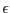
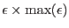
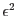

A further matter to consider is the effect of exposure correction on the variance map. Since variance is the square of standard deviation, the obvious thing to to is to divide the input variance image by the square of the exposure map . (Remember that, regardless of the value of readvarianceset, the task makes use of an internal variance image if either writevarianceset=`yes' or smoothstyle=`adaptive'.) For all choices of smoothstyle but `adaptive', this makes sense. However, recall that adaptive smoothing makes use of the input variance to calculate the signal-to-noise ratio (SNR) of the input image. From equation 3 one can see that correct division of variance by exposure squared produces the following equation for SNR:
This treatment of variance will produce an image in which short-exposure areas are more heavily smoothed than long-exposure areas. Short-exposure areas will in other words exhibit broader spatial variation - they will appear more `out of focus'. This can be irritating. An alternative approach is provided via the parameter expmapuse. If this is set to `samesnr' (the default), equation 5 is employed. If expmapuse is instead set to `samesize', the input variance is divided by  instead of by . The effect on the output of the `samesize' selection is to leave areas of the image of shorter exposure with a similar distribution of spatial frequencies to, but larger noise brightness amplitude than, areas of longer exposure. Note that this ONLY affects the SNR calculation: if the variance of the output image is also desired, this is calculated according to equation 2 in the standard way.